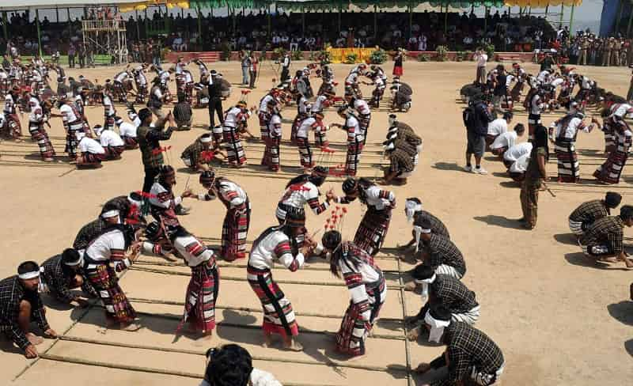
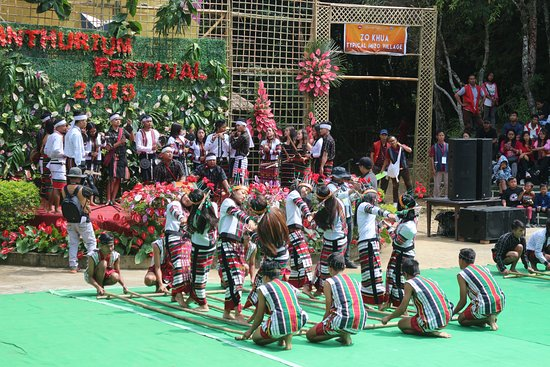
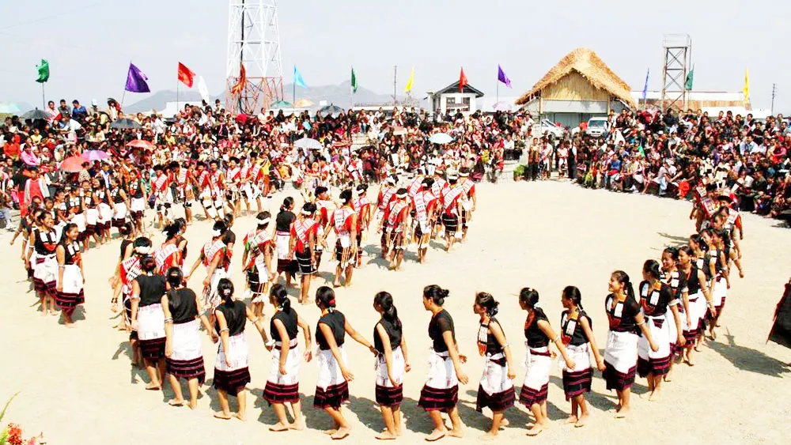

🪔 Fairs and Festivals of Mizoram – A Celebration of Culture and Tradition 🎉
🛕 1. Festivals 🌟
Chapchar Kut 🌸 – The most popular spring festival, celebrated with vibrant traditional dances, music, and feasting after the jungle clearing for cultivation.


Christmas & New Year 🎄🎊 – Grandly celebrated across Mizoram with prayers, feasts, carols, and community gatherings, as Christianity is widely followed.
Mim Kut Bamboo Festival 🎋 – A celebration dedicated to bamboo crafts and its significance in Mizo culture.

🏇2. Famous Fairs:
Anthurium Festival 🌺
A tourism promotion fair held in Reiek, featuring beautiful anthurium flowers, cultural programs, and traditional crafts.


Mim Kut Fair 🌽
Organized alongside the Mim Kut Festival, where farmers display their harvested maize, local produce, and handicrafts.
Thalfavang Kut Fair 🌿
Celebrated after the weeding of paddy fields, this fair includes agricultural exhibitions, traditional games, and performances.


Pawl Kut Fair 🌾
A harvest fair marking the end of the farming season, with agriculture-based stalls, traditional dance shows, and food stalls.